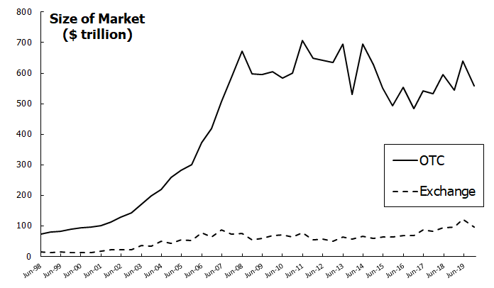
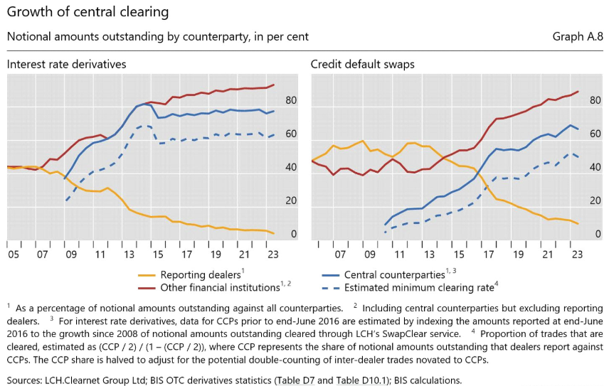
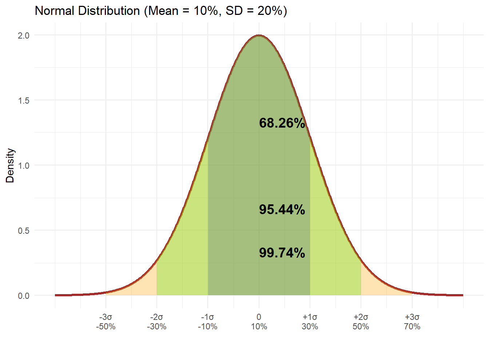
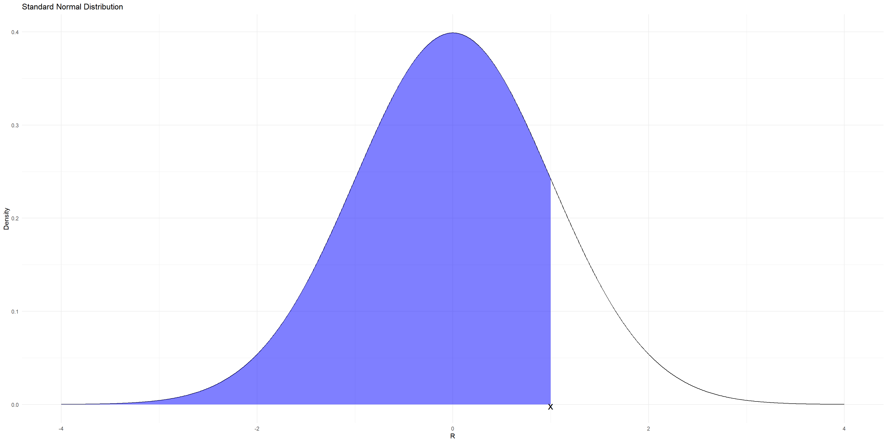
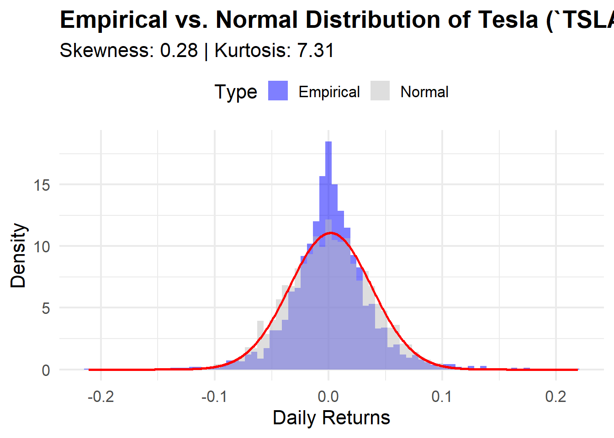
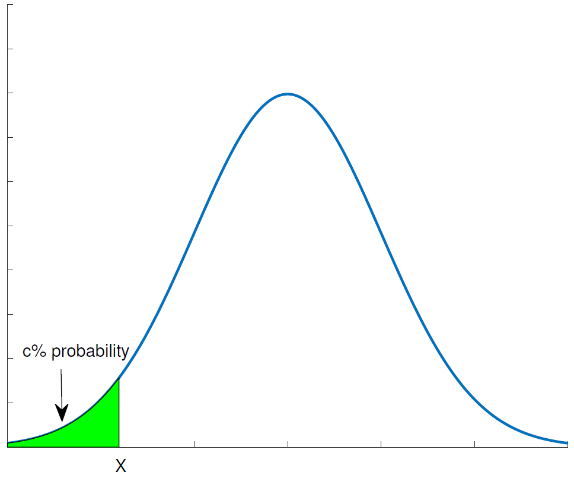
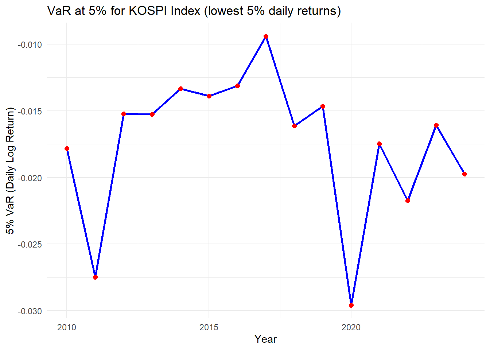
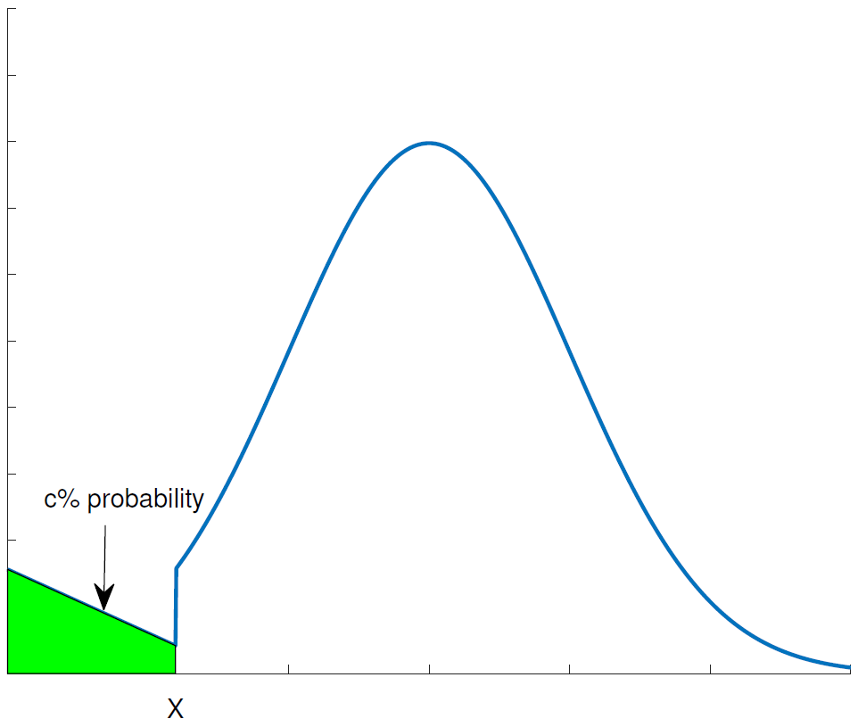
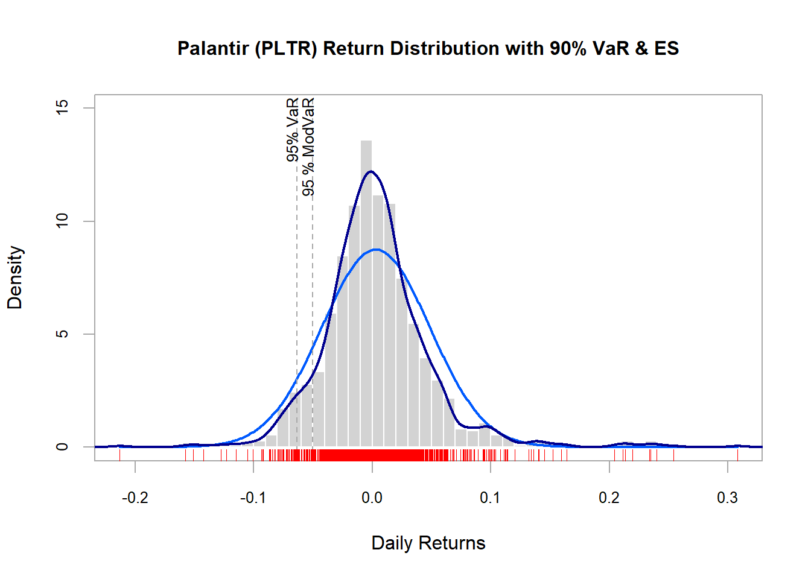

P0 <- 100
P1 <- 110
P2 <- 100
R_t <- P1 / P0
r_t <- (P1 - P0) / P0
log_return <- log(P1 / P0)
list(GrossReturn = R_t, NetReturn = r_t, LogReturn = log_return)$GrossReturn
[1] 1.1
$NetReturn
[1] 0.1
$LogReturn
[1] 0.09531018BUSS386 Futures and Options
\(\Rightarrow\) All variables should be measurable and observable.
Derivatives have been used by farmers and merchants for thousands of years:
In the 12th century, European merchants used forward contracts for the future delivery of their goods.
During Amsterdam’s tulip mania in the 1630s, derivatives helped some merchants manage price swings.
In the 17th century, Japan developed a forward market in rice.
Modern developments:
Derivatives can be traded in two main types of markets:

“Necessity is the mother of invention” - Plato
Without proper risk management, derivatives trading can lead to significant losses. Here are some notable examples:
Effective risk management is crucial:

Derivatives are traded by various market participants:
Each participant contributes to the market’s depth and liquidity.
Suppose a stock price evolves as follows:
P0 <- 100
P1 <- 110
P2 <- 100
R_t <- P1 / P0
r_t <- (P1 - P0) / P0
log_return <- log(P1 / P0)
list(GrossReturn = R_t, NetReturn = r_t, LogReturn = log_return)$GrossReturn
[1] 1.1
$NetReturn
[1] 0.1
$LogReturn
[1] 0.09531018If a bond pays 10% semiannually, its compounded return is:
\[ \left( 1+ \frac{r}{k} \right)^k -1 \]
Continuously compounded return:
\[ \lim_{k \rightarrow \infty} \left( 1+ \frac{r}{k} \right)^k - 1 = e^r -1 \]
In R:
r <- 0.10
compounded_return <- (1 + r / 2)^2 - 1
continuously_compounded <- exp(r) - 1
list(CompoundedReturn = compounded_return, ContinuousReturn = continuously_compounded)$CompoundedReturn
[1] 0.1025
$ContinuousReturn
[1] 0.1051709What is the equivalent c.c. return of Bond XYZ? \[ e^r = \left( 1+ \frac{10\%}{2} \right)^2 \] \[ r = \ln \left( 1+ \frac{10\%}{2} \right)^2 = \ln \frac{P_1}{P_0} = 9.758\% \]
Again, suppose \(P_0=100\), \(P_1=110,\) and \(P_2=100\). 2-year gross return is
\[ R(0,2) = \frac{P_2}{P_0} \]
2-year gross return using 1-year return:
\[ R(0, 2) = \frac{P_2}{P_0} = \frac{P_1}{P_0} \frac{P_2}{P_1} = R(0,1)R(1,2) \]
cf. Log returns
Typically, returns are expressed as an annual return for comparison.
Monthly return 1% for 12 months:
\[ r = (1+ 0.01)^{12} -1 \]
A two-year return 10%: \[\begin{align*} &(1+r_1)(1+r_2) = 1.1 \\ &\text{Set } r_1 = r_2 = r \\ &(1+r)^2 = 1.1 \Rightarrow r= (1.1)^{1/2} -1 = 4.89\% \end{align*}\]
In general, an annualized return \(=(1+r_c)^{(365/Days)}-1\), where \(r_c\) is the cumulative (holding-period) return, i.e., \(P_t/P_0-1\).
\[ r_{AM} = \frac{(r_1+r_2+\dots+r_T)}{T} \]
\[ r_{GM} = \left[ (1+r_1)(1+r_2)\dots(1+r_T)\right]^{1/T}-1 \]
In R:
returns <- c(0.05, 0.10, -0.02, 0.07)
mean_arith <- mean(returns)
mean_geom <- prod(1 + returns)^(1/length(returns)) - 1
list(ArithmeticMean = mean_arith, GeometricMean = mean_geom)$ArithmeticMean
[1] 0.05
$GeometricMean
[1] 0.04905428Fact 1: \(r_{AM} \ge r_{GM}\)
Fact 2: The greater the volatility of returns, the greater \(r_{AM} - r_{GM}\)
Typically, use \(r_{AM}\) as a proxy for the expected return.
The probability weighted average return
In population (when we know the probability function),
In sample (when we only observe history),
The expected return is the probability-weighted average of all possible returns.
In practice, the true probability distribution of returns is often unknown (i.e., from the future). Therefore, we estimate it using historical data.
Typically, we use the arithmetic average of historical returns to estimate the expected return.
The higher the risk, the greater the required rate of return. In equilibrium, the required rate of return should be equal to the expected return.
In population
In sample
Note
\[ \frac{E(r) - r_f}{\sigma} \]
Example in R:
# Load necessary libraries
library(quantmod)Loading required package: xtsLoading required package: zoo
Attaching package: 'zoo'The following objects are masked from 'package:base':
as.Date, as.Date.numericLoading required package: TTRRegistered S3 method overwritten by 'quantmod':
method from
as.zoo.data.frame zoo library(PerformanceAnalytics)
Attaching package: 'PerformanceAnalytics'The following object is masked from 'package:graphics':
legend# Load Tesla (TSLA) stock data from Yahoo Finance
getSymbols("TSLA", src = "yahoo", from = "2015-01-01", to = Sys.Date(), auto.assign = TRUE)[1] "TSLA"# Compute daily returns and remove missing values
tsla_returns <- na.omit(dailyReturn(Cl(TSLA)))
# Compute annualized return and standard deviation
annualized_return <- Return.annualized(tsla_returns, geometric = TRUE)
annualized_std_dev <- sd(tsla_returns) * sqrt(252) # Convert daily std to annualized
# Get the latest 3-month Treasury Bill (IRX) as risk-free rate
getSymbols("^IRX", src = "yahoo", from = Sys.Date() - 30, to = Sys.Date(), auto.assign = TRUE)Warning: ^IRX contains missing values. Some functions will not work if objects
contain missing values in the middle of the series. Consider using na.omit(),
na.approx(), na.fill(), etc to remove or replace them.[1] "IRX"risk_free_rate <- as.numeric(last(Cl(IRX))) / 100 # Convert from percentage
# Compute Sharpe Ratio (Annualized)
sharpe_ratio <- (annualized_return - risk_free_rate) / annualized_std_dev
sharpe_ratio daily.returns
Annualized Return 0.5105525Warning: package 'ggplot2' was built under R version 4.4.3Warning: Using `size` aesthetic for lines was deprecated in ggplot2 3.4.0.
ℹ Please use `linewidth` instead.
\[ f(x) = \frac{1}{\sqrt{2\pi} \sigma}e^{-\frac{(x-\mu)^2}{2\sigma^2}} \]
\[ f(x) = \frac{1}{\sqrt{2\pi} }e^{-\frac{r^2}{2}} \]
If \(Z \sim \phi(0,1)\), then \(X=\mu + \sigma Z \sim N(\mu,\sigma^2)\)
If \(X \sim N(\mu_X,\sigma^2_X)\) and \(Y \sim N(\mu_Y,\sigma^2_Y)\), then \(X+Y \sim N(\mu_X+\mu_Y,\sigma^2_X +\sigma^2_Y +2cov(X,Y))\)

To find this probability, we calculate
\[ \text{Prob}(R \leq x) = \int_{-\infty}^x \frac{1}{\sqrt{2\pi}} e^{-\frac{r^2}{2}}dr \equiv \Phi(x). \] \(\Phi(x)\) is called the cumulative probability distribution function for a standard normal random variable.
For any \(x\), the value of \(\Phi(x)\) can be found using the excel function, (x, TRUE).
prob_R1 <- 1 - pnorm(1, mean = 0, sd = 1)
cat("P(R1 > 1) =", prob_R1, "\n")P(R1 > 1) = 0.1586553 prob_R2 <- pnorm(0.5, mean = 0.1, sd = 0.2)
cat("P(R2 ≤ 0.5) =", prob_R2, "\n")P(R2 ≤ 0.5) = 0.9772499
Attaching package: 'moments'The following objects are masked from 'package:PerformanceAnalytics':
kurtosis, skewness[1] "TSLA"
\(X \sim LN(\mu, \sigma^2)\) if \(\ln(X) \sim N(\mu, \sigma^2)\)
If a rate of return is normally distributed, security prices follow lognormal distribution.
Standard deviation measures the level of uncertainty about the outcomes, or the dispersion of probability distribution.
The larger standard deviation is, the riskier a project.
A disadvantage of the standard deviation is that it cannot distinguish between upside and downside movement.

\[ \text{Prob}\left( R \leq X \right) = 0.05 \]
norm.inv().
For given \(1-p\), norm.inv(1-p, mean, sigma) is \(X\) that satisfies \(\text{Prob}\left(R \leq X \right) = 1-p\).
norm.inv(0.05,0,1) = -1.645(R: qnorm(0.05, mean = 0, sd = 1))
norm.inv(0.1,0,1) = -1.282(R: qnorm(0.10, mean = 0, sd = 1))
Suppose we own a stock whose return is normally distributed with a mean of 15% and a standard deviation of 30%. What is the 5% Value at Risk (VaR) for this stock?
Answer: Let \(X\) denote the 5% VaR. Then, \(\Pr(R \le X) = \texttt{norm.inv}(0.05, 0.15, 0.30) = -34.3\%\)
Alternatively, \[\begin{align*} \text{Prob}\left(R \leq X \right) = \text{Prob}\left( \frac{R - 0.15}{0.3} \leq \frac{X - 0.15}{0.3} \right) = 0.05 \end{align*}\] Note that \(\frac{R - 0.15}{0.3} \sim \phi(0,1)\), so we can write \[ \frac{X - 0.15}{0.3} = \texttt{norm.s.inv}(0.05) = -1.645. \] Thus, \(X = -34.3\%\).
Q. A portfolio worth $10 million has a 1-day standard deviation of $200,000 and an approximate mean of zero. Assume that the change is normally distributed. What is the 1-day 99% VaR for our portfolio consisting of a $10 million position in Microsoft? What is the 10-day 99% VaR?
Answer: \(\texttt{norm.s.inv(0.01)} = -2.326\), meaning that there is a 1% probability that a normally distributed variable will decrease in value by more than 2.326 standard deviations.
Hence, the 1-day 99% VaR is \(2.326 \times \$200,000 = \$465,300\).
The 10-day 99% VaR is \(2.326 \times (\$200,000 \times \sqrt{10}) = \$1,471,300\).
######################### Warning from 'xts' package ##########################
# #
# The dplyr lag() function breaks how base R's lag() function is supposed to #
# work, which breaks lag(my_xts). Calls to lag(my_xts) that you type or #
# source() into this session won't work correctly. #
# #
# Use stats::lag() to make sure you're not using dplyr::lag(), or you can add #
# conflictRules('dplyr', exclude = 'lag') to your .Rprofile to stop #
# dplyr from breaking base R's lag() function. #
# #
# Code in packages is not affected. It's protected by R's namespace mechanism #
# Set `options(xts.warn_dplyr_breaks_lag = FALSE)` to suppress this warning. #
# #
###############################################################################
Attaching package: 'dplyr'The following objects are masked from 'package:xts':
first, lastThe following objects are masked from 'package:stats':
filter, lagThe following objects are masked from 'package:base':
intersect, setdiff, setequal, unionWarning: ^KS200 contains missing values. Some functions will not work if
objects contain missing values in the middle of the series. Consider using
na.omit(), na.approx(), na.fill(), etc to remove or replace them.[1] "KS200"Warning in to_period(xx, period = on.opts[[period]], ...): missing values
removed from data

Expected Shortfall is another measure to address the shortcoming of VaR.
Suppose that we focus on the loss that will happen with 5% probability. Let V denote the 5% loss (VaR). Then, \[ \text{Expected shortfall} = E\left(R | R \leq V \right) \]
Also known as Conditional Value at Risk (CVaR)
[1] "PLTR"90% Historical VaR: -0.044821 90% Expected Shortfall: -0.069202 
The ISDA is a trade organization of participants in the market for over-the-counter derivatives. ISDA has created a standardized contract (the ISDA Master Agreement) to govern derivative transactions, which helps to reduce legal and credit risks.↩︎